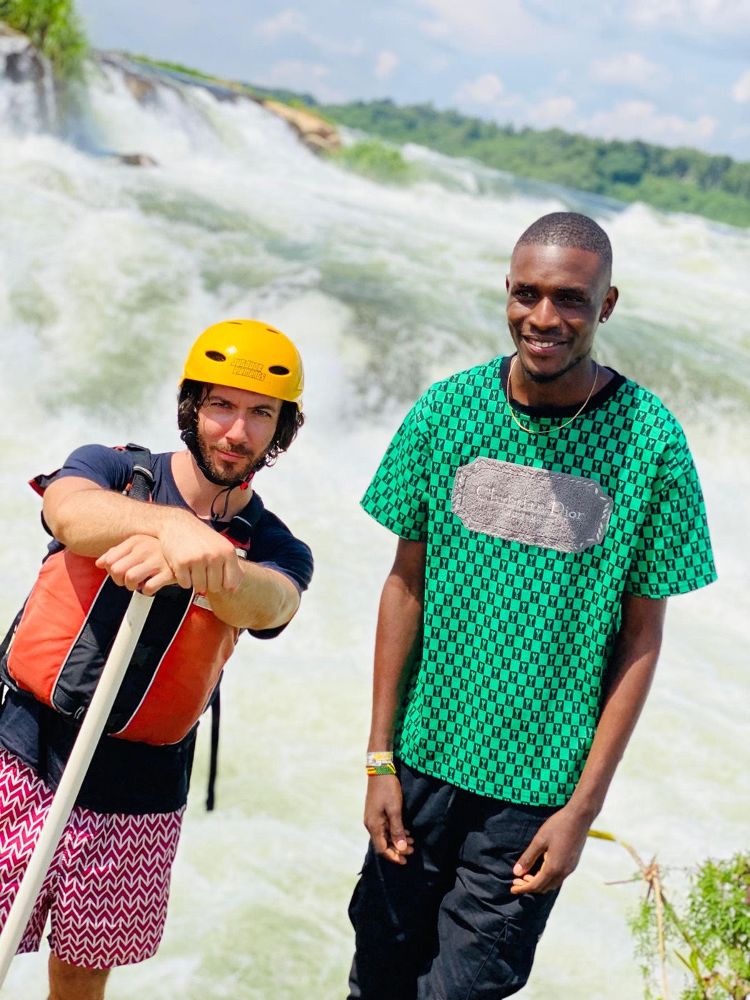
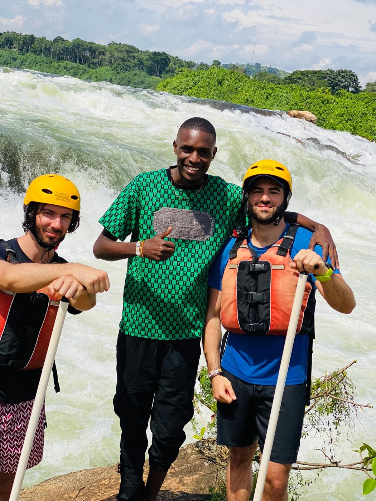
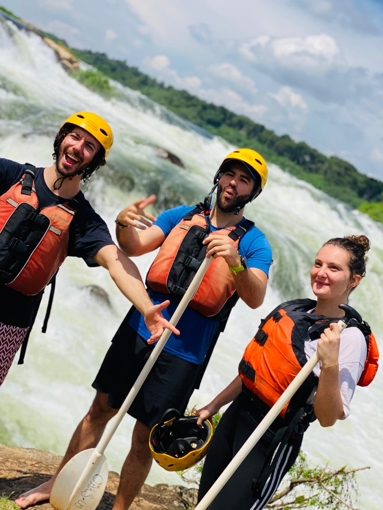
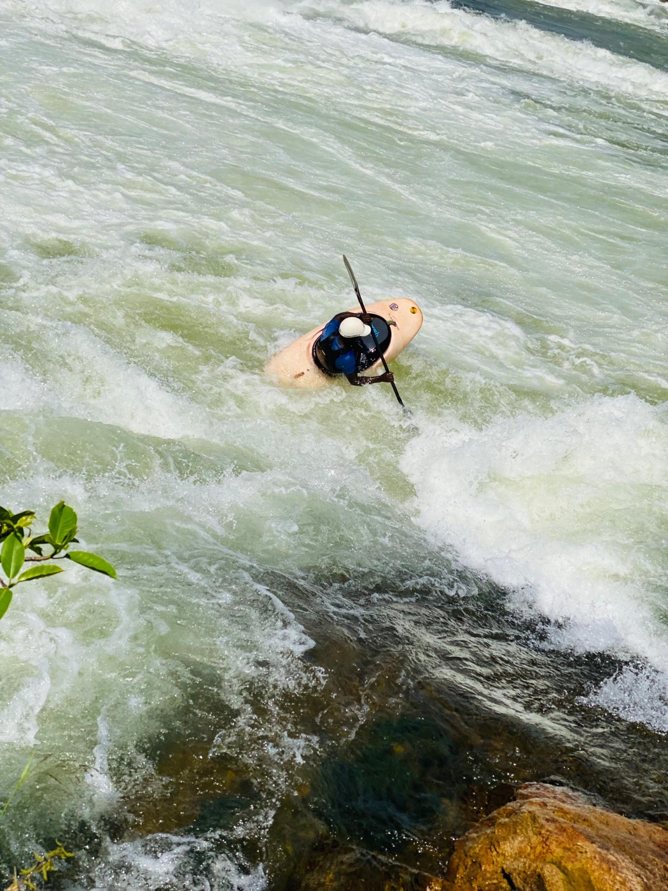
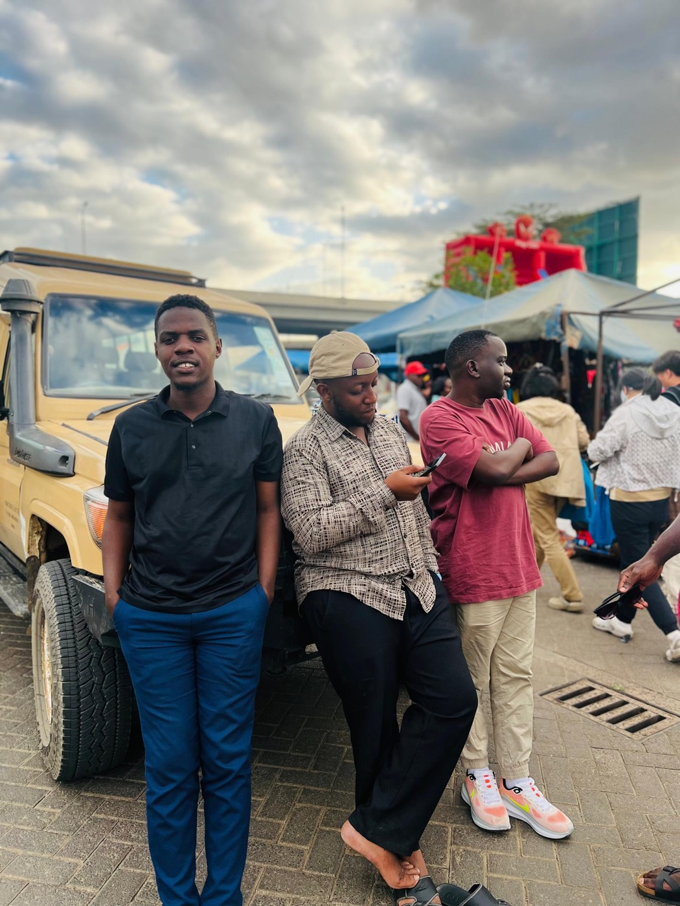

Home ✦ Gallery
Proof it happened
No stock-photo fantasies here — these are real snapshots from recent Feels Timeless trips: giraffe breakfasts in Nairobi, dhow cruises on the Indian Ocean, villa mornings and long city walks. Tap any photo to view it large.







Trip films
Moments in motion
Short clips straight from our travelers' phones — unfiltered, unscripted, exactly how it felt.
Your photos belong on this page.
Book a trip, live it fully, and send us your favourite shot — we feature traveler photos every month.
Plan my trip